Late-night cheap eats 宵夜
Still serving after 11pm. 60 places.
 Kai Kai Dessert佳佳甜品 · Jordan$32
Kai Kai Dessert佳佳甜品 · Jordan$32  Lau Sum Kee劉森記麵家 · Sham Shui Po$46
Lau Sum Kee劉森記麵家 · Sham Shui Po$46  Kam Wah Cafe金華冰廳 · Mong Kok$38
Kam Wah Cafe金華冰廳 · Mong Kok$38  Kwan Kee Claypot Rice坤記煲仔小菜 · Sai Ying Pun$88
Kwan Kee Claypot Rice坤記煲仔小菜 · Sai Ying Pun$88  Yuen Kee Dessert源記甜品 · Sai Ying Pun~$30
Yuen Kee Dessert源記甜品 · Sai Ying Pun~$30 Ho Hung Kee何洪記 · Causeway Bay$88
Ho Hung Kee何洪記 · Causeway Bay$88  Man Kee Cart Noodle文記車仔麵 · Sham Shui Po~$48
Man Kee Cart Noodle文記車仔麵 · Sham Shui Po~$48 One Dim Sum一點心 · Mong Kok$72
One Dim Sum一點心 · Mong Kok$72  Tung Po Kitchen東寶小館 · North Point$128
Tung Po Kitchen東寶小館 · North Point$128  Kwan Kee Bamboo Noodle坤記竹昇麵 · Cheung Sha Wan~$58
Kwan Kee Bamboo Noodle坤記竹昇麵 · Cheung Sha Wan~$58 Mak Man Kee麥文記麵家 · Jordan$64
Mak Man Kee麥文記麵家 · Jordan$64  Dim Dim Sum點點心 · Mong Kok$58
Dim Dim Sum點點心 · Mong Kok$58  Tai Wing Wah大榮華酒樓 · Yuen Long$88
Tai Wing Wah大榮華酒樓 · Yuen Long$88  Yee Shun Milk Company義順牛奶公司 · Causeway Bay$42
Yee Shun Milk Company義順牛奶公司 · Causeway Bay$42 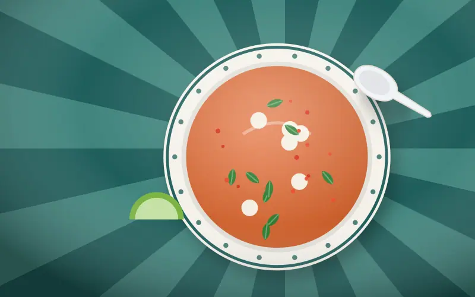
Wong Chun Chun Thai黃珍珍泰國菜館 · Kowloon City$68 Kung Tak Lam功德林 · Causeway Bay$98
Kung Tak Lam功德林 · Causeway Bay$98  Ap Lei Chau Market Cooked Food Centre鴨脷洲街市熟食中心 · Ap Lei Chau~$95
Ap Lei Chau Market Cooked Food Centre鴨脷洲街市熟食中心 · Ap Lei Chau~$95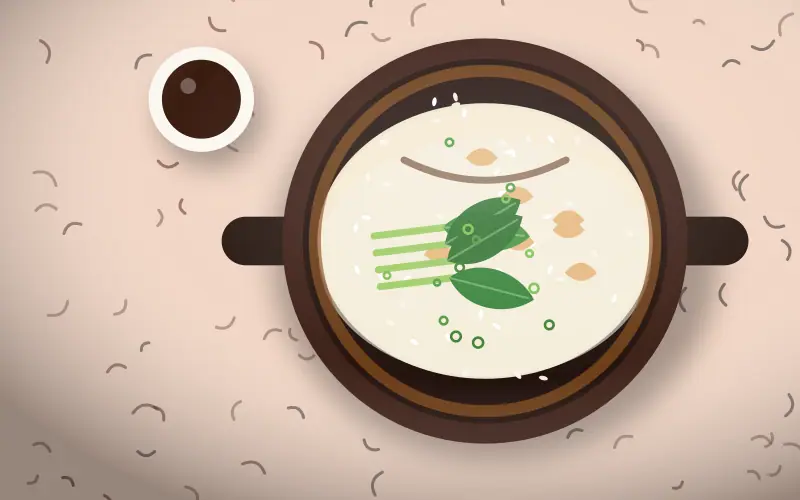
Four Seasons Claypot Rice四季煲仔飯 · Yau Ma Tei$98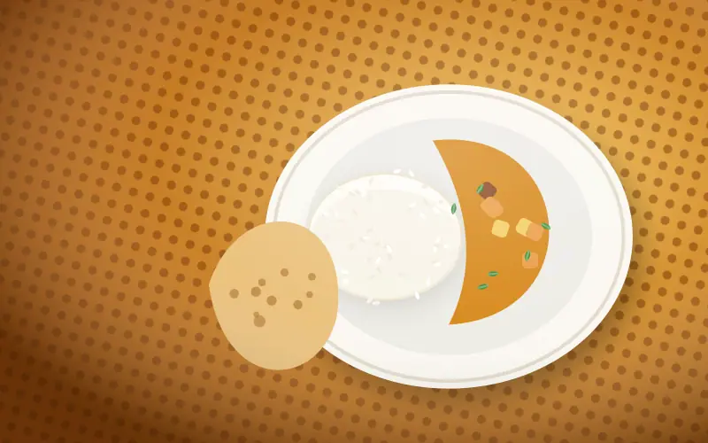
Delhi Club德里俱樂部 · Tsim Sha Tsui$88 Yee Shun Milk Company (Jordan)義順牛奶公司（佐敦） · Jordan$46
Yee Shun Milk Company (Jordan)義順牛奶公司（佐敦） · Jordan$46  Sing Kee Seafood (Stanley St)盛記海鮮（士丹利街） · Central$118
Sing Kee Seafood (Stanley St)盛記海鮮（士丹利街） · Central$118  Hokkaido Dairy Farm Milk Restaurant北海道牧場餐廳 · Mong Kok$42
Hokkaido Dairy Farm Milk Restaurant北海道牧場餐廳 · Mong Kok$42  Fei Jie肥姐小食店 · Mong Kok~$30
Fei Jie肥姐小食店 · Mong Kok~$30 Khyber Pass Mess Club開巴印度餐廳 · Tsim Sha Tsui~$85
Khyber Pass Mess Club開巴印度餐廳 · Tsim Sha Tsui~$85 Tsui Wah (Prince Edward)翠華（太子） · Prince Edward$36
Tsui Wah (Prince Edward)翠華（太子） · Prince Edward$36  Hing Kee Restaurant興記菜館 · Yau Ma Tei$108
Hing Kee Restaurant興記菜館 · Yau Ma Tei$108  TamJai SamGor (Quarry Bay)譚仔三哥米線（鰂魚涌） · Quarry Bay$52
TamJai SamGor (Quarry Bay)譚仔三哥米線（鰂魚涌） · Quarry Bay$52  TamJai SamGor (Mong Kok)譚仔三哥米線（旺角） · Mong Kok$52
TamJai SamGor (Mong Kok)譚仔三哥米線（旺角） · Mong Kok$52 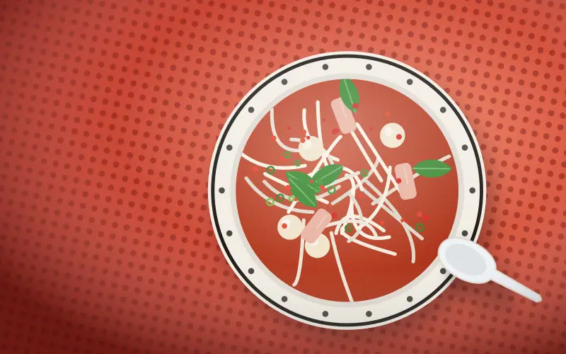
TamJai SamGor (Sheung Shui)譚仔三哥米線（上水） · Sheung Shui$52 TamJai SamGor (Tseung Kwan O)譚仔三哥米線（將軍澳） · Tseung Kwan O$52
TamJai SamGor (Tseung Kwan O)譚仔三哥米線（將軍澳） · Tseung Kwan O$52  TamJai SamGor (Tuen Mun)譚仔三哥米線（屯門） · Tuen Mun$52
TamJai SamGor (Tuen Mun)譚仔三哥米線（屯門） · Tuen Mun$52 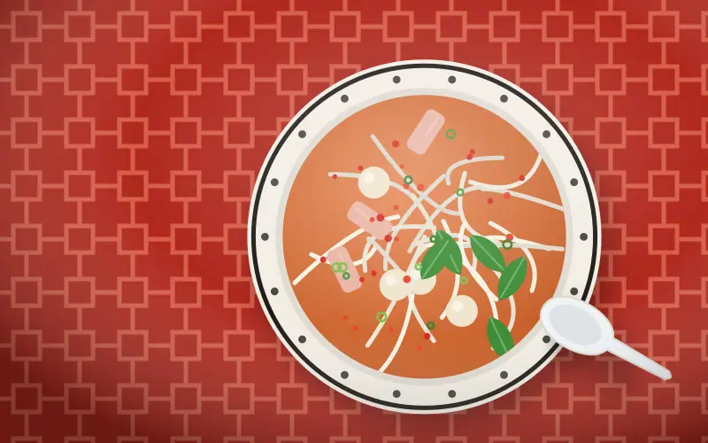
Tam Jai Yunnan Mixian (Wan Chai)譚仔雲南米線（灣仔） · Wan Chai$56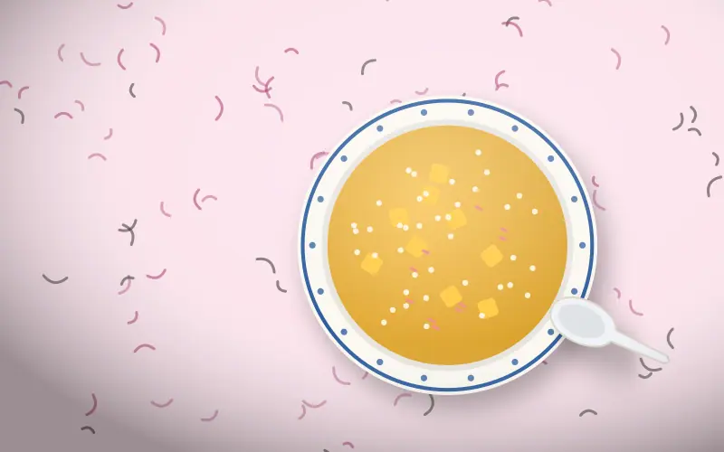
Meet Fresh (Causeway Bay)鮮芋仙（銅鑼灣） · Causeway Bay$42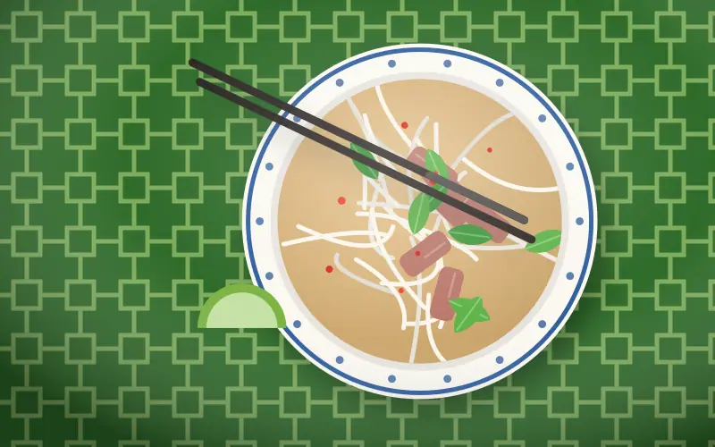
Lo Chiu Vietnamese (Jordan)老趙越南餐廳（佐敦） · Jordan$72 Islam Food清真牛館 · Kowloon City$88
Islam Food清真牛館 · Kowloon City$88  Tam Jai Yunnan Mixian (Lok Fu)譚仔雲南米線（樂富） · Lok Fu$56
Tam Jai Yunnan Mixian (Lok Fu)譚仔雲南米線（樂富） · Lok Fu$56 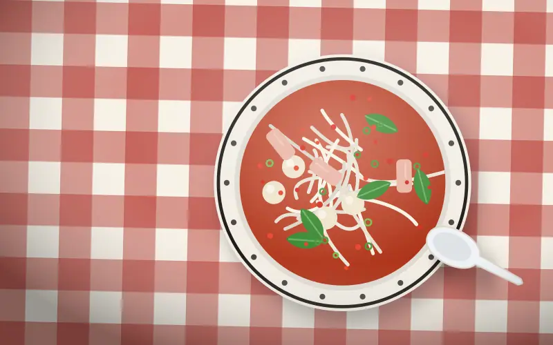
Tam Jai Yunnan Mixian (Kwai Fong)譚仔雲南米線（葵芳） · Kwai Fong$56 TamJai SamGor (Tsuen Wan)譚仔三哥米線（荃灣） · Tsuen Wan$52
TamJai SamGor (Tsuen Wan)譚仔三哥米線（荃灣） · Tsuen Wan$52  Tam Jai Yunnan Mixian (Fo Tan)譚仔雲南米線（火炭） · Fo Tan$56
Tam Jai Yunnan Mixian (Fo Tan)譚仔雲南米線（火炭） · Fo Tan$56  Tam Jai Yunnan Mixian (Kwun Tong)譚仔雲南米線（觀塘） · Kwun Tong$56
Tam Jai Yunnan Mixian (Kwun Tong)譚仔雲南米線（觀塘） · Kwun Tong$56  Yue Kee Roast Goose裕記大飯店 · Sham Tseng$98
Yue Kee Roast Goose裕記大飯店 · Sham Tseng$98 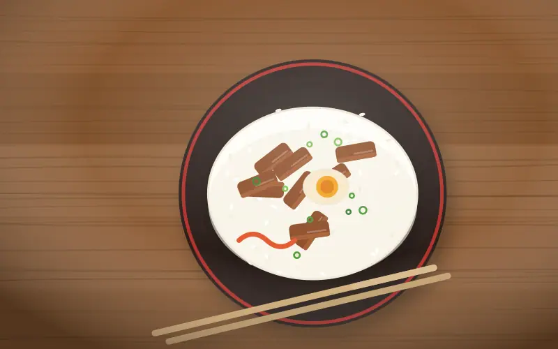
Yoshinoya (Kwai Chung)吉野家（葵涌） · Kwai Chung$48 Tam Jai Yunnan Mixian (Tung Chung)譚仔雲南米線（東涌） · Tung Chung$56
Tam Jai Yunnan Mixian (Tung Chung)譚仔雲南米線（東涌） · Tung Chung$56 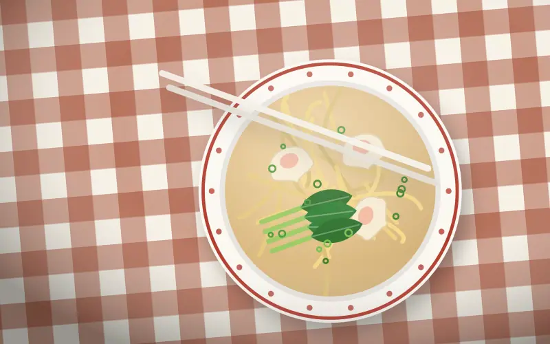
Wing Wah Noodle Shop永華麵家 · Wan Chai$78 Yoshinoya (North Point)吉野家（北角） · North Point$50
Yoshinoya (North Point)吉野家（北角） · North Point$50  Chuen Cheung Kui (Mong Kok)泉章居（旺角） · Mong Kok$128
Chuen Cheung Kui (Mong Kok)泉章居（旺角） · Mong Kok$128  Sukiya (Kowloon Bay)すき家（九龍灣） · Kowloon Bay$52
Sukiya (Kowloon Bay)すき家（九龍灣） · Kowloon Bay$52 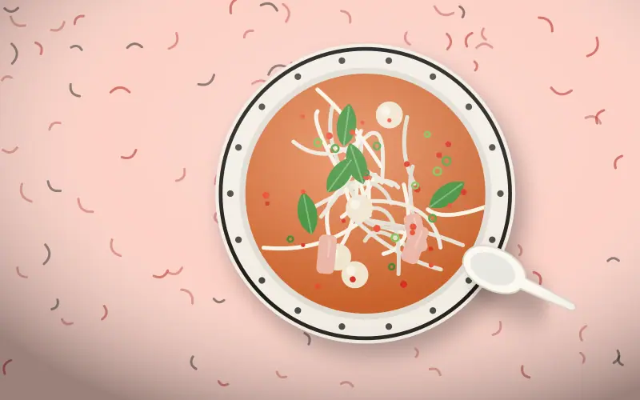
Tam Jai Yunnan Mixian (Tai Po)譚仔雲南米線（大埔） · Tai Po$56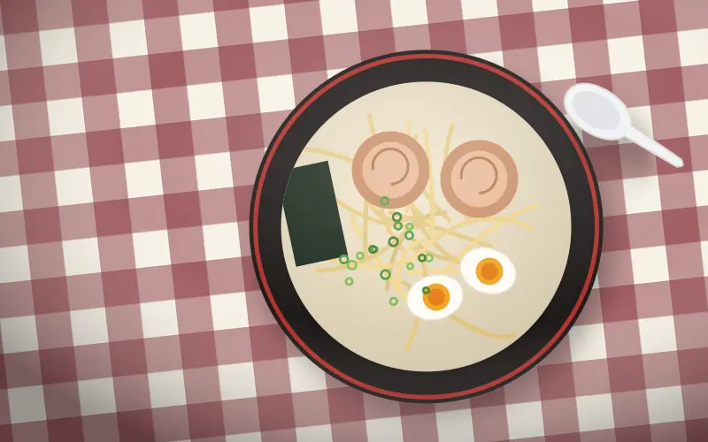
Yoshinoya (Tai Po)吉野家（大埔） · Tai Po$46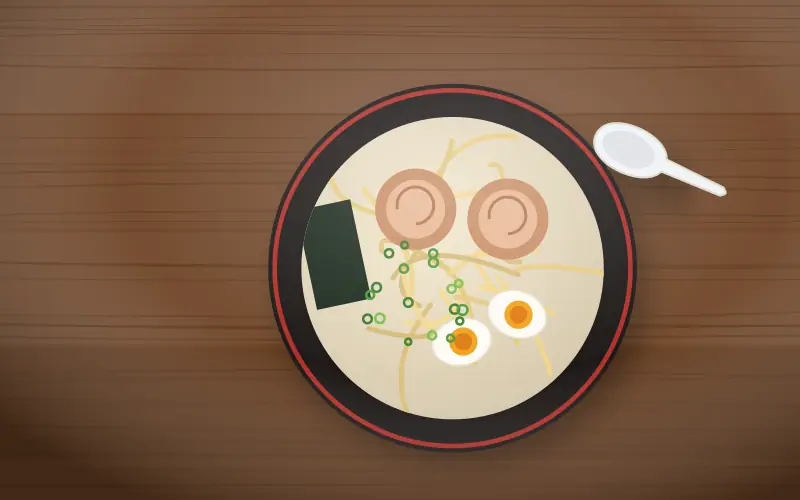
Sukiya (Mong Kok)すき家（旺角） · Mong Kok~$52 Honeymoon Dessert (Tsing Yi)滿記甜品（青衣） · Tsing Yi$52
Honeymoon Dessert (Tsing Yi)滿記甜品（青衣） · Tsing Yi$52  Tsui Wah (Tai Po)翠華（大埔） · Tai Po$42
Tsui Wah (Tai Po)翠華（大埔） · Tai Po$42  Chee Kei (Tsim Sha Tsui)池記（尖沙咀） · Tsim Sha Tsui$72
Chee Kei (Tsim Sha Tsui)池記（尖沙咀） · Tsim Sha Tsui$72 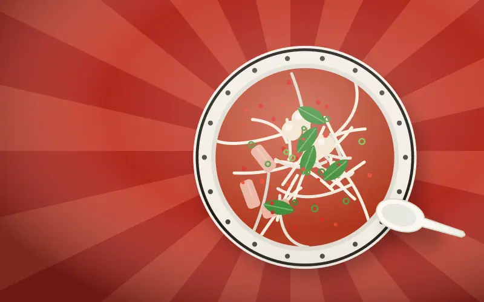
Tam Jai Yunnan Mixian (Aberdeen)譚仔雲南米線（香港仔） · Aberdeen$56 Sam Shing Hui Seafood Street三聖墟海鮮街 · Tuen Mun~$120
Sam Shing Hui Seafood Street三聖墟海鮮街 · Tuen Mun~$120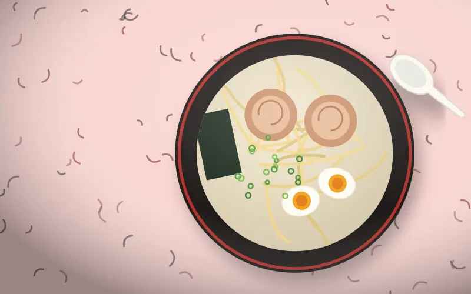
Yoshinoya (Sheung Shui)吉野家（上水） · Sheung Shui$58 Tsui Wah Restaurant翠華餐廳 · Central$62
Tsui Wah Restaurant翠華餐廳 · Central$62  Chong Fat Chiu Chow創發潮州飯店 · Kowloon City~$158
Chong Fat Chiu Chow創發潮州飯店 · Kowloon City~$158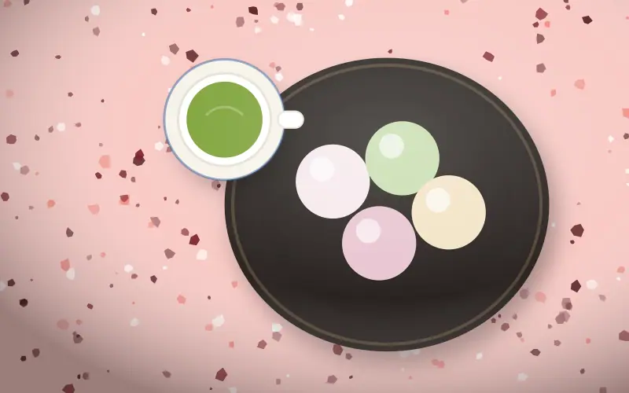
Yoshinoya (Hung Hom)吉野家（紅磡） · Hung Hom$58 Tam Jai Yunnan Mixian (Tin Shui Wai)譚仔雲南米線（天水圍） · Tin Shui Wai$56
Tam Jai Yunnan Mixian (Tin Shui Wai)譚仔雲南米線（天水圍） · Tin Shui Wai$56 More guides
Best meals under HK$50Cheap eats under HK$30Best value for moneyLate-night cheap eatsHidden gemsCheap breakfast in Hong KongRoast Meats 燒味Cha Chaan Teng 茶餐廳Dim Sum 點心Noodles 粉麵Congee 粥品Claypot 煲仔Cantonese 粵菜Seafood 海鮮Desserts 甜品Bakery 餅店Street Snacks 小食Vegetarian 素食HK Fast Food 快餐Rice Noodles 米線Thai 泰國菜Curry 咖喱Japanese 日式Vietnamese 越南菜Taiwanese 台灣菜Shanghainese 上海菜Dumplings & Northern 北方菜HK-style Western 港式西餐